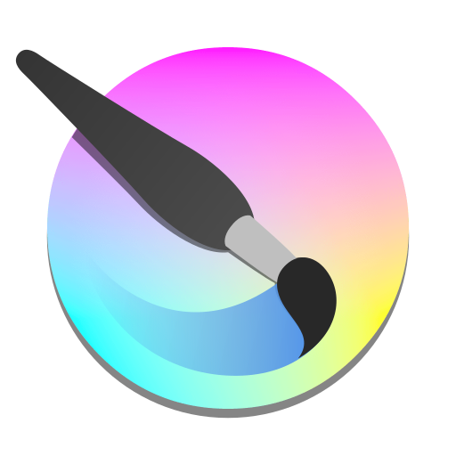
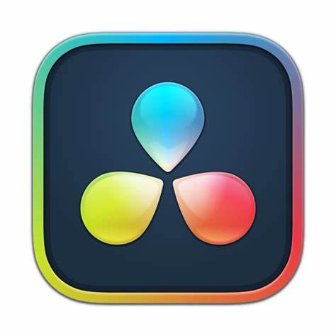
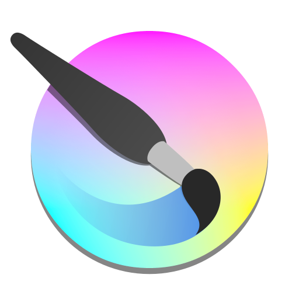
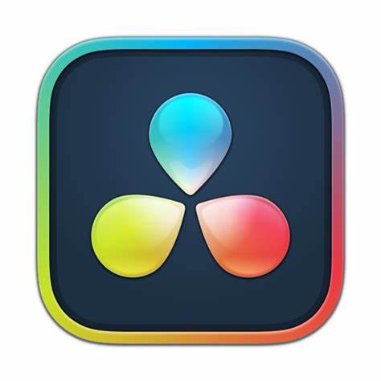

Hello, I'm Andre. A digital art genralist and game developer form Boise, Idaho. I made this website to showcase my skills to potential employers
My Software Skills:
 




Project #1: Magnet Field Media Logo.
A custom made logo for my YouTube channel and upcoming game studio. Made with Affinity Designer

Project #2: Magnet Field Media Haloween 2022.
This is a Halloween art piece I made for my channel. Made with Affinity Designer and Krita
Project #3: Koschei's Lair.
This is a digital painting I made for a visual design class, focusing on the iconic Russian folklore figure: Koshei the Deathless. My favorite part of making it definitely has to be creating the atmosphere for the painting; The fog and lighting effects especially. Made with Krita

Project #4: Sailboat.
This was made when I was first trying out Affinity Designer. Additional elements added with Krita

Project #5: Field Landscape.
A simple field Landscape I mad efor Practice. made in Krita
Project #6
This is a trailer I made for a game prototype that I also made. Recorded in OBS and edited in Premire Pro.